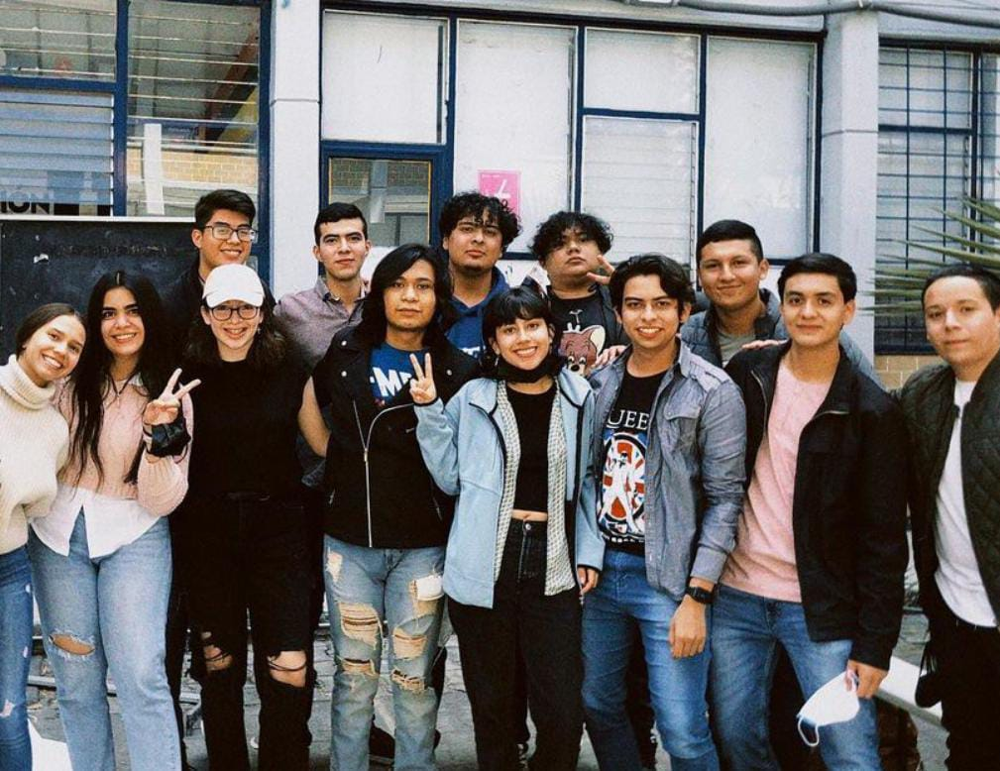

Mi introduccion a la programacion
Estudiar programación es un viaje emocionante lleno de desafíos iniciales, pero también de oportunidades significativas. Al principio, la complejidad de los lenguajes y la sintaxis pueden parecer abrumadores, y resolver problemas puede ser un proceso frustrante.
Sin embargo, este camino recompensa la perseverancia con una oportunidad única para ejercer la creatividad y el pensamiento lógico en la resolución de problemas. Además, la alta demanda laboral, la flexibilidad y los salarios competitivos hacen que esta disciplina sea una elección atractiva. Además, contribuir al avance de la tecnología y tener un impacto en la sociedad son aspectos sumamente gratificantes de estudiar programación.
A pesar de que al principio de la carrera podía hacer todo solo, pasando el tiempo se complicaron las cosas y mas aún cuando comenzaron las clases presenciales e ibamos avanzando en semestres. Debo decir que mis amigos de la universidad son mi segunda familia ya que sin ellos no sería lo mismo y todo sería mucho mas complicado. siemprre nos estamos apoyando unos a otros, no solamente hablando de lo escolar, tambien en lo personal.
Actualmente curso el septimo semestre de ingenieria en computacion, ya falta muy poco para egresar y enfrentarme al mundo laboral, no se qué es lo que me depare el futuro pero lo importante es avanzar